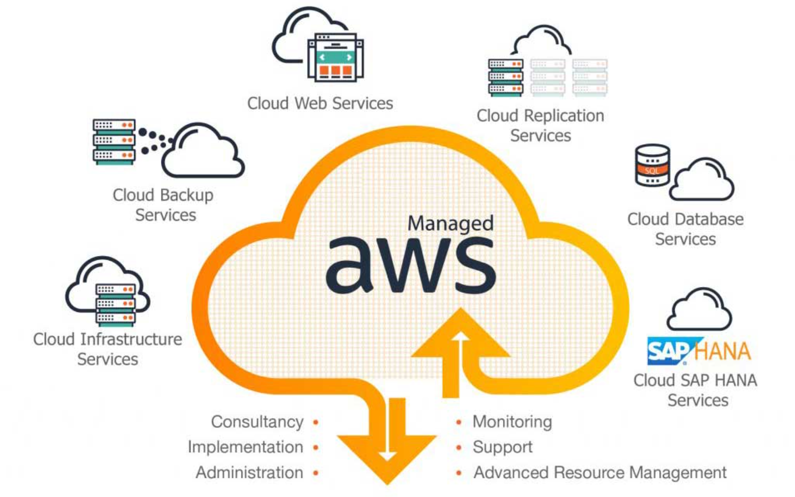

My Projects
Explore my recent work and innovations
Web Design
Curry House Online Ordering System - A complete online ordering platform for a curry restaurant in South Canteen. Built with focus on user experience and performance.
- Interactive menu display
- User account system
- Order management

Cloud Server
Scalable and secure cloud infrastructure implementation. Building robust server architectures for enterprise applications.
- AWS/Azure cloud services integration
- Microservices architecture
- Docker containerization
- CI/CD pipeline implementation
- Load balancing and auto-scaling
